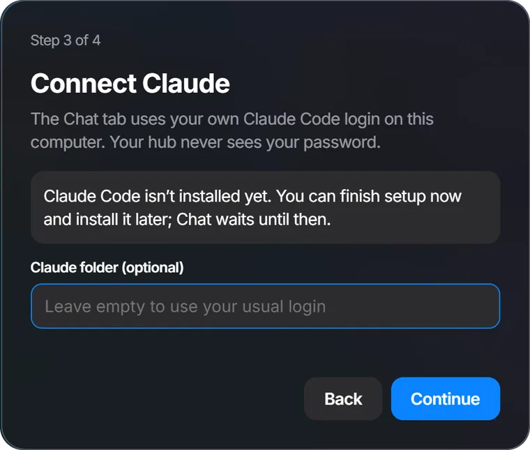

Getting started
Install and First run get it running. The rest are for Chat and the launcher. You’ll do this on your Windows PC.
Install
LocalHub’s desktop app is for Windows only for now.
- Get the installer from the LocalHub home page.
- Open the file you downloaded. It installs for your Windows user, with no admin prompt.
- The installer isn’t signed yet, so Windows SmartScreen may warn you. Choose More info, then Run anyway.
- LocalHub opens when it’s done. If it doesn’t, open it from the Start menu.
Closing the window keeps LocalHub running, with an icon in the tray by the clock. To stop it, click that icon and choose Quit. Uninstalling leaves your settings and keys on the computer. Your data says how to remove them.
First run
The first time it opens, LocalHub asks four things.
A name
Call your hub anything, or keep “LocalHub”.
Who can reach it
Only this computer is the safe default. Nothing else can open LocalHub.
My tailnet also lets your own devices on Tailscale open it, with a passcode. A tailnet is your private Tailscale network. This option stays grey until Tailscale is installed on this computer. Your other devices has the steps.
The screen says you can widen this later, but there’s no screen for changing it after setup yet, so choose with that in mind.

Connect Claude
This screen tells you whether Claude Code is installed and signed in. If it isn’t, you can still finish. Chat waits until it is, and The assistant below shows how. Leave Claude folder empty.
Optional keys
You can skip all of these and press Finish. Each one turns on an extra tab, and none of them are needed for Chat. They stay on this computer.
- OpenRouter, DeepSeek
- AI tab: your balances
- Stripe
- Stripe tab: read-only
- Coolify, Cloudflare
- Cloud tab: read-only
- Calendar link
- Calendar tab

The assistant
Chat runs through Claude Code, Anthropic’s own program, on your computer and with your own account. LocalHub never sees your password.
Anthropic says its free plan doesn’t include Claude Code, so you’ll need a paid Claude plan or an Anthropic Console account.
- Install Claude Code by following Anthropic’s install page.
- Open a terminal, which is a window where you type commands. Press the Windows key, type PowerShell and press Enter.
- Type
claudeand press Enter. Your browser opens so you can sign in. - Close the terminal and go back to LocalHub’s Chat tab.
LocalHub can run Chat on an Anthropic API key instead of a login, but Claude Code still has to be installed, and there’s no screen for adding that key yet. The OpenRouter and DeepSeek keys in setup don’t run Chat.
The launcher
Press Ctrl Alt Space anywhere in Windows and a small search bar opens over whatever you’re doing. Press Esc or click away to close it. Inside LocalHub’s own window, the search bar is Ctrl K.
To use different keys, click the tray icon and choose Settings, click in the Launcher hotkey box, press the keys you want and choose Save.
The launcher only works while LocalHub is running. To have it ready after a restart, turn on Start at login in the tray menu. It’s off until you do.